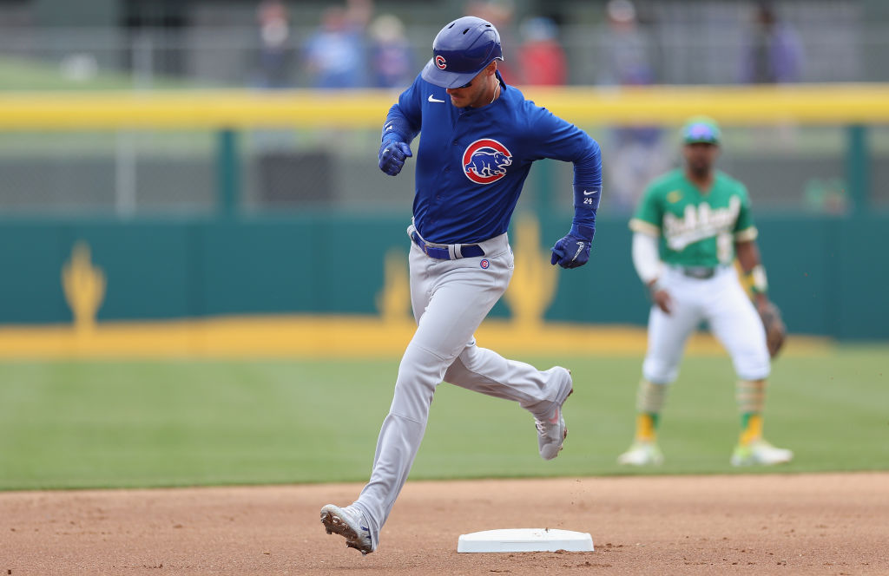

Fútbol
Es el deporte con mayor cantidad de practicantes y seguidores en todo el planeta. Se juega entre dos equipos de 11 jugadores cada uno, con el objetivo de introducir el balón en la portería contraria. Se practica en todos los continentes y su máxima competición internacional es la Copa del Mundo, que se realiza cada cuatro años.

Baloncesto
Nacido en Estados Unidos, hoy es seguido por millones de personas. Dos equipos de cinco jugadores intentan introducir el balón en un aro situado a una altura determinada. Destaca por su ritmo rápido, la técnica y la capacidad atlética de los deportistas. La liga más famosa es la NBA, aunque tiene competiciones de gran nivel en Europa, Asia y América.

Voleibol
Es un deporte que puede practicarse en cancha cubierta o en la playa. Dos equipos de seis jugadores se sitúan en campos separados por una red y deben pasar el balón al campo contrario sin que toque el suelo. Es muy valorado por su accesibilidad, ya que no requiere equipamiento complejo y fomenta mucho la coordinación grupal.

Tenis
Se puede jugar de forma individual o en parejas. Los jugadores usan una raqueta para golpear la pelota al campo contrario, buscando que el rival no pueda devolverla correctamente. Es uno de los deportes con mayor tradición y cobertura mediática, con torneos importantes como el Abierto de Australia, Roland Garros, Wimbledon y el Abierto de Estados Unidos.

Béisbol
Muy popular en América, Asia y el Caribe. Se enfrenta a dos equipos que alternan entre ataque y defensa. El objetivo es recorrer una serie de bases después de golpear la pelota lanzada por el rival. Es un deporte con reglas muy estructuradas y una gran tradición en países como Estados Unidos, México, Japón, República Dominicana o Venezuela.